Rädda Bina
UX Design projekt
Överblick
En 1/3 av vildbana ät hotade idag, dessa är våra
största pollinatörer och förser oss med en stor del av maten vi äter, detta ser vi som ett stort
problem som måste förebyggas och därför startade vi detta projektet.
Vårt mål var att öka antalet vildbin genom att utföra detta projektet där vi ökar medvetenheten av problemet genom att skapa flera bihotell med Sveriges 4e klassare, som ett skolprojekt.
Vårt mål var att öka antalet vildbin genom att utföra detta projektet där vi ökar medvetenheten av problemet genom att skapa flera bihotell med Sveriges 4e klassare, som ett skolprojekt.
Första Projektet
Vi gjorde detta som vårt första projekt tillsammans
som 5 UX design studenter för öva oss på de olika delarna som finns med i UX
processen.
Vi utförde aldrig hela projektet rent praktiskt utan byggde en prototyp till hur vi skulle kunna utföra det om vi hade fortsatt med produkten/projektet vidare.
vi hade 3 veckor på oss.
Vi utförde aldrig hela projektet rent praktiskt utan byggde en prototyp till hur vi skulle kunna utföra det om vi hade fortsatt med produkten/projektet vidare.
vi hade 3 veckor på oss.

Process för vår idée
Några viktiga tankar vi hade i åtanke under
processen:
hur får vi barnen engagerade i längden och inte bara på kort sikt?
Hur får vi skolorna engagerade till att vara delaktig i projektet?
Hur kan man få in projektet i skolundervisningen under en längre sikt utan att ta upp annan undervisningstid?
Gör vår insatts någon skillnad?
Hur vet vi att den gör skillnad?
Enligt Skolverket finns idag totalt omkring 4 850 grundskoleenheter i hela landet och det går i genomsnitt 203 elever per grundskolenhet och av dem är 115641 elever 10 åringar. Med hjälp av denna statisk kan vi dra en parallell kring av vår slutinsatts jämfört med antalet 10 åringar i skolan.
Vi skickade ett mail till NS för att få veta mer om kring vad som vi ”vet” och inte vet.
Utifrån den information vi fått från NS saknas det forkning kring hur effektivt det är att faktiskt bygga bihotel men vi utgår att en ökning är i värsta fall oväsenting men att ett allmänt ökat intresse för allvaret av problemet bland barn fortfarande är positivt.
hur får vi barnen engagerade i längden och inte bara på kort sikt?
Hur får vi skolorna engagerade till att vara delaktig i projektet?
Hur kan man få in projektet i skolundervisningen under en längre sikt utan att ta upp annan undervisningstid?
Gör vår insatts någon skillnad?
Hur vet vi att den gör skillnad?
Enligt Skolverket finns idag totalt omkring 4 850 grundskoleenheter i hela landet och det går i genomsnitt 203 elever per grundskolenhet och av dem är 115641 elever 10 åringar. Med hjälp av denna statisk kan vi dra en parallell kring av vår slutinsatts jämfört med antalet 10 åringar i skolan.
Vi skickade ett mail till NS för att få veta mer om kring vad som vi ”vet” och inte vet.
Utifrån den information vi fått från NS saknas det forkning kring hur effektivt det är att faktiskt bygga bihotel men vi utgår att en ökning är i värsta fall oväsenting men att ett allmänt ökat intresse för allvaret av problemet bland barn fortfarande är positivt.
Sketcher och Idéer

För att kunna förstå problemet på en djupare nivå försökte vi först
att ta
kontakt med biodlare men vi insåg att det redan finns väldigt mycket information om ämnet online och
insåg att vi behöver lägga krutet på att intervjua de som kommer vara delaktiga i projektet, alltså barn
och lärare.
Vår främsta fråga i början av projektet var hur ska vi få 10 åringar att fortsätta bli engagerade i längden, och hur vi ska skapa de verktyg som behövs för att underlätta för att skolorna ska kunna förmedla vidare information till barnen.
Efter vi enskilt sketchat på idéer visade sig vi tänkt ganska liknande om att skapa någon teknisk plattform som skulle underlätta och göra projektet roligare att utföra för barnen.
Det finns redan en del organisationer (de ovan)som fokuserar på liknande problem men vi tänkte att det effektivaste sättet för att bidra till en bättre framtid för barnen är att få de så engagerade som möjligt och därför bestämde vi oss för att skapa denna plattform och på så sätt göra processen roligare och mer intressant.
Efter de intervjuer vi gjorde med lärare fick vi en del insikter kring hur skolorna jobbar, tillexempel har de flesta skolor tillgång till chromebooks idag, och verkar se det som en tekniskt positiv utvecklig(för det mesta).
Mycket undervisning är ämnesöverskridande och möjligheten att kunna införa projektet under tillexempel NO lektioner och träslöjd verkar mycket möjligt.
Korta filmer 10-15 min är bra sätt att visa undervisning som de kan pausa och spola tillbaka är effektivt.
De tröttnar snabbare när de gör ren teori men praktiskt arbete kan vara betydligt längre.
Lärarna verkade tycka att de generellt jobbar med miljö och framtid frågor på ett ganska ineffektivt sätt.
Vår främsta fråga i början av projektet var hur ska vi få 10 åringar att fortsätta bli engagerade i längden, och hur vi ska skapa de verktyg som behövs för att underlätta för att skolorna ska kunna förmedla vidare information till barnen.
Efter vi enskilt sketchat på idéer visade sig vi tänkt ganska liknande om att skapa någon teknisk plattform som skulle underlätta och göra projektet roligare att utföra för barnen.
Det finns redan en del organisationer (de ovan)som fokuserar på liknande problem men vi tänkte att det effektivaste sättet för att bidra till en bättre framtid för barnen är att få de så engagerade som möjligt och därför bestämde vi oss för att skapa denna plattform och på så sätt göra processen roligare och mer intressant.
Efter de intervjuer vi gjorde med lärare fick vi en del insikter kring hur skolorna jobbar, tillexempel har de flesta skolor tillgång till chromebooks idag, och verkar se det som en tekniskt positiv utvecklig(för det mesta).
Mycket undervisning är ämnesöverskridande och möjligheten att kunna införa projektet under tillexempel NO lektioner och träslöjd verkar mycket möjligt.
Korta filmer 10-15 min är bra sätt att visa undervisning som de kan pausa och spola tillbaka är effektivt.
De tröttnar snabbare när de gör ren teori men praktiskt arbete kan vara betydligt längre.
Lärarna verkade tycka att de generellt jobbar med miljö och framtid frågor på ett ganska ineffektivt sätt.
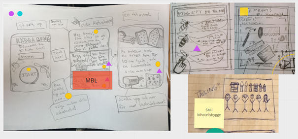
Efter våra solution sketcher fick vi mer input i gruppen där de
olika
markörerna(de gula och lila) var de delar vi tyckte var intressanta. Som ovan blev det en
app(hemsida/mobil) där man får instruktioner hur man kan bygga bihotell. Sen var där även idén med att
kunna tävla vilket blev en instagram inspirerad funktion där man tar en bild på sitt bihotell efter man
skapat det.
Openingscene:
Vi tänkter att läraren kommer att visa appen men även gå igenom att de kommer följa ett projekt där de kommer lära sig mer om hur viktiga bina är under ett par veckor som bland annat ämnesöverskridande uppgifter i NO och träslöjden.
Vi tänkter att läraren kommer att visa appen men även gå igenom att de kommer följa ett projekt där de kommer lära sig mer om hur viktiga bina är under ett par veckor som bland annat ämnesöverskridande uppgifter i NO och träslöjden.
End Goal:
Vi får statistik genom att barnen laddar upp bilder med deras bihotell på appen och på så sätt vet vi att det skapats flera bihotell men även ökat medvetandet blandbarnen.
Vi får statistik genom att barnen laddar upp bilder med deras bihotell på appen och på så sätt vet vi att det skapats flera bihotell men även ökat medvetandet blandbarnen.
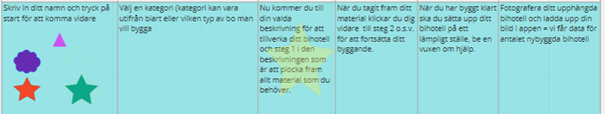
Detta var vår userflow men enbart för appens
funktionalitet.
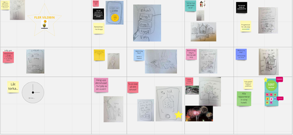
Vår Storyboard
Prototypfasen
Hypotes:
Vi tror att
[en interaktiv app med instruktioner och verktyg för att bygga ett alldeles eget bihotell]
för
[Sveriges 4:e klassare]
kommer skapa
[ett engagemang och ge kunskap som gör att fler vildbin överlever]
Evidence: Genom att eleverna får registrera sina engagemang/bihotell genom att ladda upp en bild får vi en levande statistik som också uppdateras i plattformen så att eleverna själva också kan följa utvecklingen.
Vi tror att
[en interaktiv app med instruktioner och verktyg för att bygga ett alldeles eget bihotell]
för
[Sveriges 4:e klassare]
kommer skapa
[ett engagemang och ge kunskap som gör att fler vildbin överlever]
Evidence: Genom att eleverna får registrera sina engagemang/bihotell genom att ladda upp en bild får vi en levande statistik som också uppdateras i plattformen så att eleverna själva också kan följa utvecklingen.
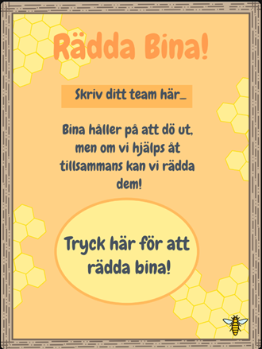
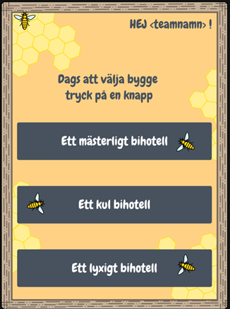
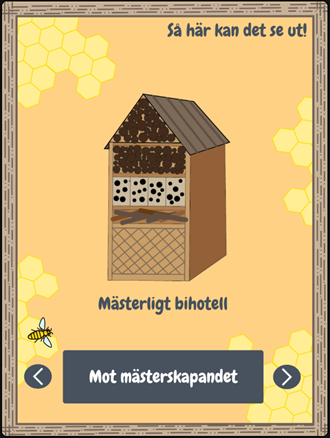
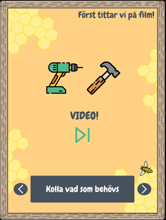
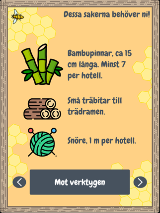
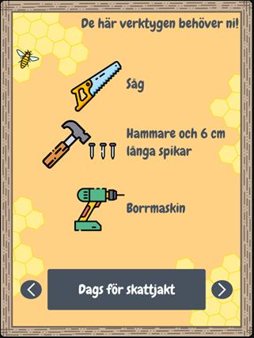
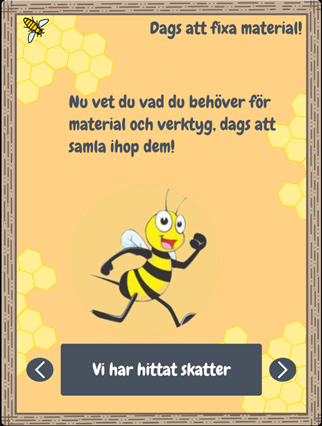
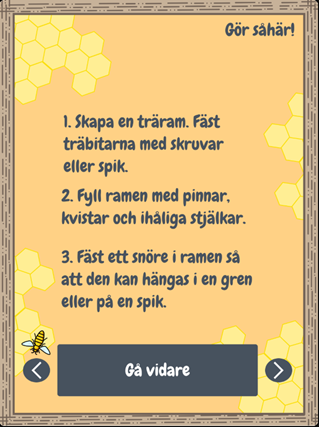
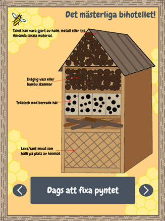
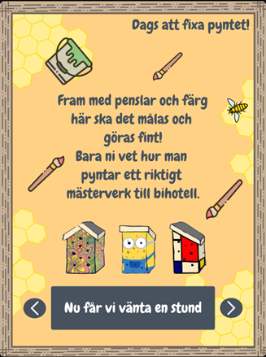
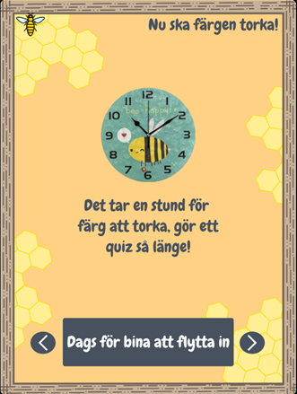
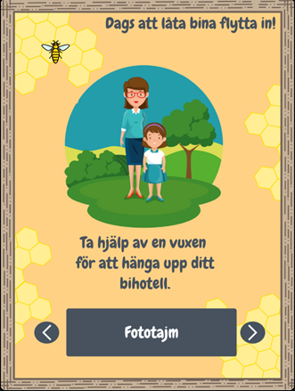
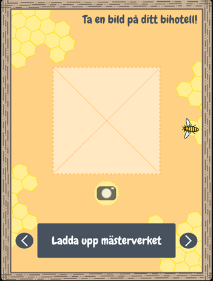
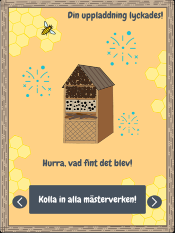
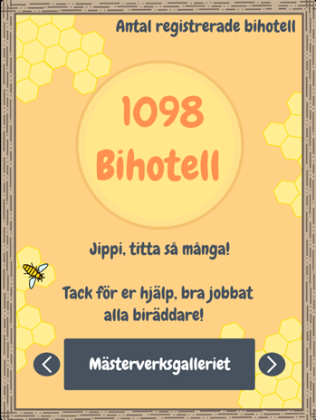
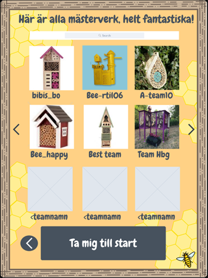
Testfasen
Vi testade appen på 4-5 barn cirka 10 pga ålder och pga GDPR lagen kunde vi
inte samla information om allihop
Citat från 10
åring:
Jag skulle ladda ner appen direkt om den fanns på riktigt! Jag skulle vilja bygga bihotell nu direkt!
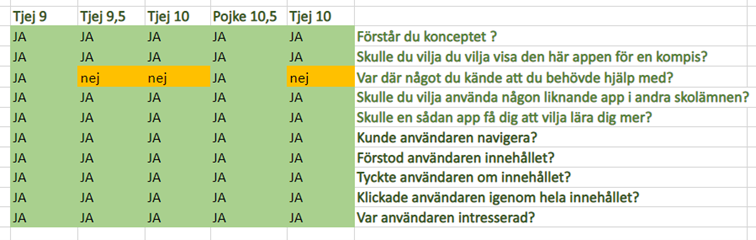
Jag skulle ladda ner appen direkt om den fanns på riktigt! Jag skulle vilja bygga bihotell nu direkt!
Scorecard från barnen
Barnen verkade förstå helheten men visade var lite otydligt hur man navigerar då där var 2 knappar men det ser ut om 3, den stora mitt knappen och framåt knappen gör samma sak.
Det fanns såklart en del oklarheter eftersom det bara är en prototyp och än så länge och barnen ville klicka på saker som ej har funktionalitet ännu.
Barnen verkade förstå helheten men visade var lite otydligt hur man navigerar då där var 2 knappar men det ser ut om 3, den stora mitt knappen och framåt knappen gör samma sak.
Det fanns såklart en del oklarheter eftersom det bara är en prototyp och än så länge och barnen ville klicka på saker som ej har funktionalitet ännu.
Slutsats
Att göra en rolig plattform med instruktioner och tävling i att bygga bästa
bihotel verkade som något barnen själv tyckte varas roligt utifrån de intervjuer vi gjorde, det finns
massa delar i själva appen och designen som vi hade fått jobba vidare på till exempel hur instruktioner
skulle utföras på ett effektivt o kul sätt och är något vi hade fått testa vidare på om vi fortsatt med
projektet.
Tror att om vi skulle utföra detta projekt på riktigt hade jag nog gjort den som en hemsida med olika sidor, information, guider, ritningar just riktat åt barn, eftersom vi också fick information om att skolorna mest använder chromebooks.
Tror att om vi skulle utföra detta projekt på riktigt hade jag nog gjort den som en hemsida med olika sidor, information, guider, ritningar just riktat åt barn, eftersom vi också fick information om att skolorna mest använder chromebooks.